당신 곁에 있는 마음 건강 센터들
Available Mental Health Resources Around You
한국어 Korean
영어 English
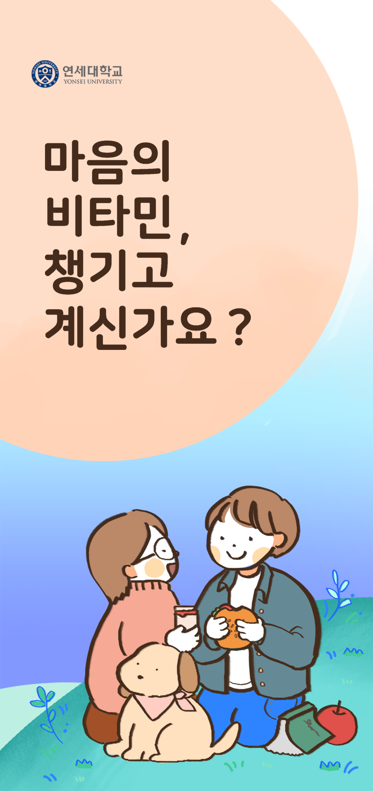
YCC 연세대학교 심리상담센터
링크 바로가기
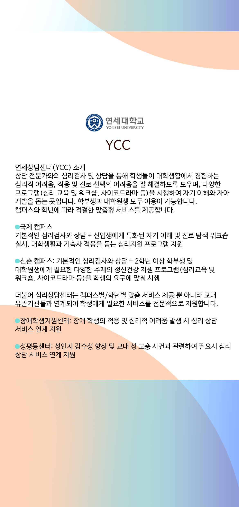 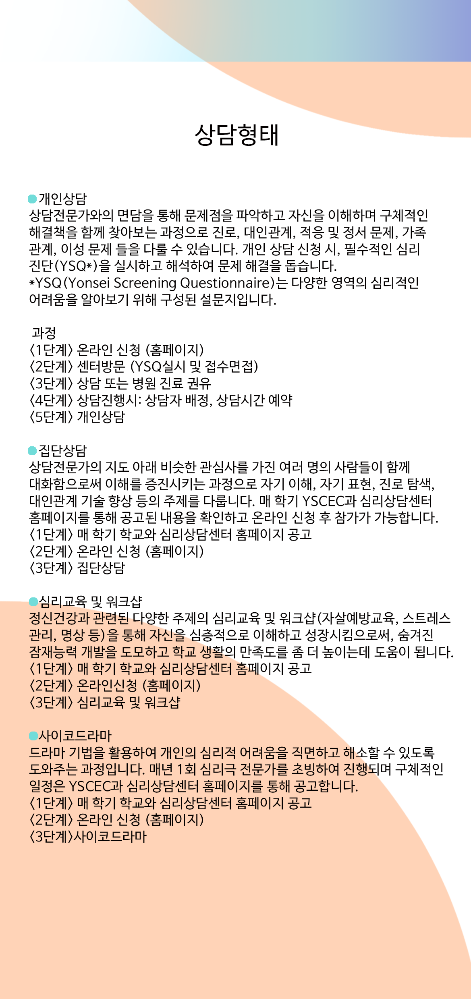 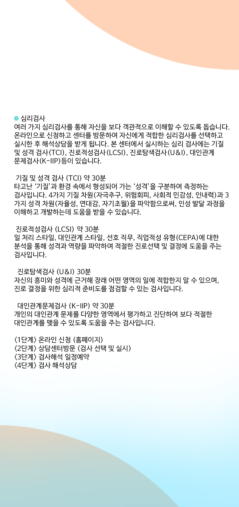 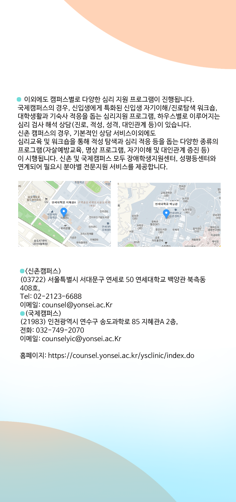
서울시 정신건강복지센터 - 마음터치 프로그램
링크 바로가기
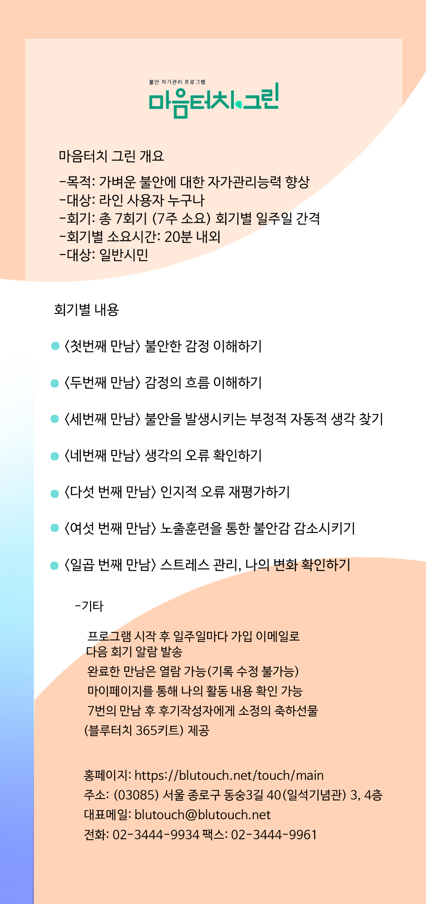
서울 청년 포털
링크 바로가기
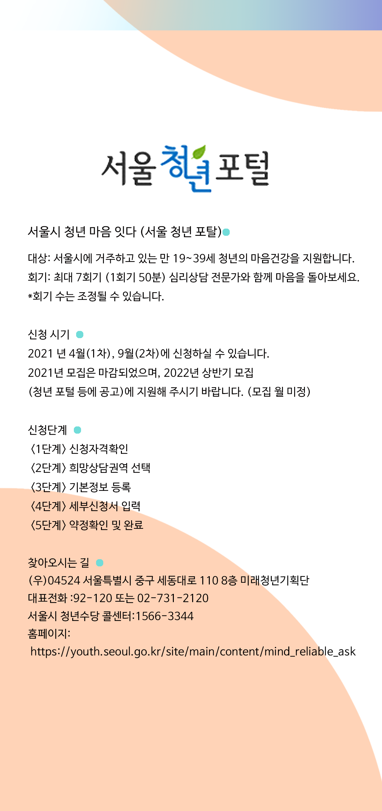
서대문구 청소년 상담복지센터
링크 바로가기
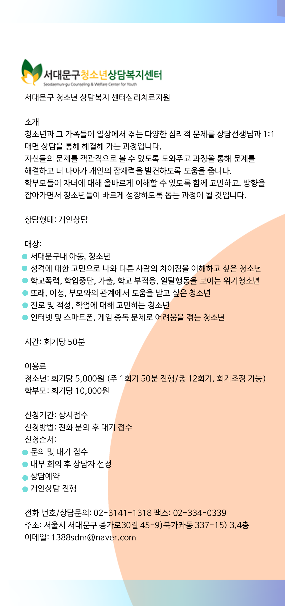
서울 글로벌 센터
링크 바로가기
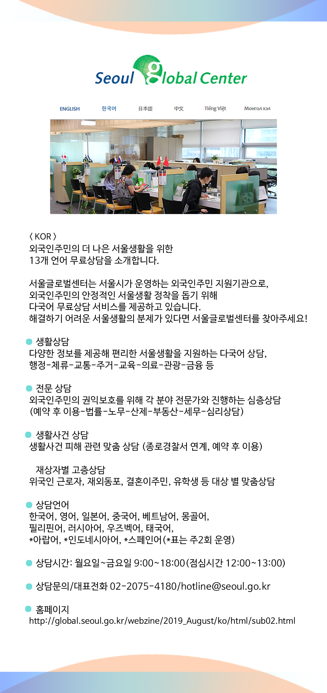
지역별 마음상담소 정보
강동구 마음상담소
구로구 마음상담소
금천구 마음상담소
동작구 마음상담소
성북구 마음상담소
영등포구 마음상담소
은평구 ‘심리지원센터 다독임’ 마음상담소
은평구 ‘한마음심리상담카페’ 마음상담소
중구 마음상담소
중랑구 마음상담소
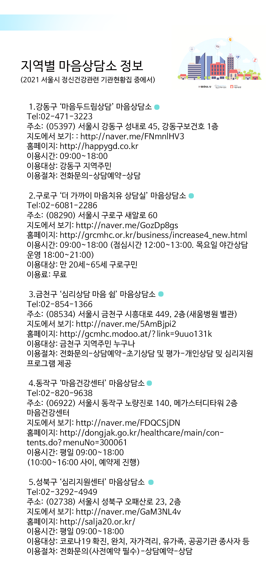 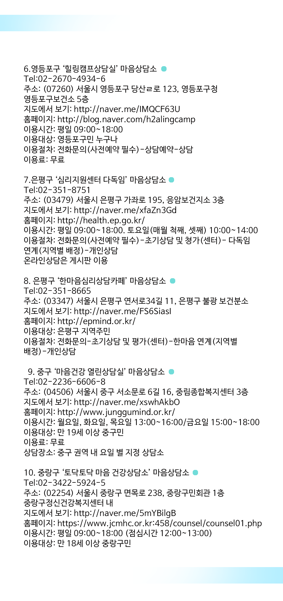